You need to enable JavaScript to run this app.
  
*if you are a mobile user, use your fingers <3
take me to 2Dwebsite(i use potato)
START
Loading
.
.
.
 
please be patient while page is laoding or visit my 2D website